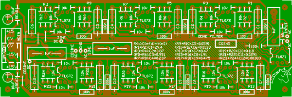

|

The dome filter is a 90° phase difference network, as used in frequency shifters. It is not a project in itself, and will be of no use to most people. I designed this board simply because I needed some dome filters for my own experimentation. The boards I am selling are simply left over from this run. The circuit is based on the work of, and Copyright by Bernie Hutchins. It was presented in Electronotes 83, in Nov 1977. The implementation is very similar to that of Jürgen Haible for his frequency shifter. Do not expect either of these people to help you with the construction of this PCB. Component values are selected using the formula printed on the PCB itself. I will be giving no more details on this project at this stage, and suggest you purchase Electronotes if you need more information.
ConstructionBefore you start assembly, check the board for etching faults. Look for any shorts between tracks, or open circuits due to over etching. Take this opportunity to sand the edges of the board if needed, removing any splinters or rough edges. When you are happy with the printed circuit board, construction can proceed as normal, starting with the resistors first, followed by the IC socket if used, then moving onto the taller components. Take particular care with the orientation of the polarized components such as electrolytics, diodes, transistors and ICs. When inserting ICs into sockets, take care not to accidentally bend any of the pins under the chip. Also, make sure the notch on the chip is aligned with the notch marked on the PCB overlay. Two resistors are placed in series in each network, to allow for the creation of the odd value resistors required. Alternately, the resistors can be left out, and a small trim-pot substituted. There are suitable holes on the PCB for one common trim-pot footprint. Corrections There is an error on this board at the output buffer op-amp (TL071). A trace goes to pin 5. This should be cut and jumpered to pin 3. Notes:
Parts list This is a guide only. Parts needed will vary with individual constructor's needs. If anyone is interested in buying these boards, please check the PCBs for Sale page to see if I have any in stock.
Can't find the parts? See the parts FAQ to see if I've already answered the question. Also see the CGS Synth discussion group.
Article, art & design copyright 2001 by Ken Stone
| ||||||||||||||||||||||||||||||||||||